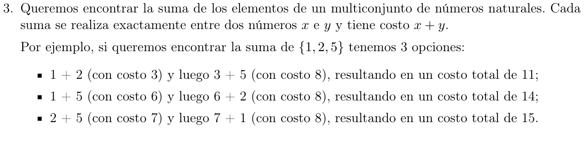

\(S\) es nuestro multiconjunto
SumaGolosa(S):
S' = min-heap(S)
total = 0
while(|S'| > 1):
x = S'.extract()
y = S'.extract()
S'.insert(x+y)
total+= x+y
return total
Invariante: En el \(k\)-ésimo paso, nuestra solución \(G\) toma los elementos minimos \(x,y \in S\), hacemos:
\[S - \left\{ x,y \right\} \land_{L}S \cup (x + y)\text{ y }G_{k} = x + y + G_{k - 1}\]

\(S = \left\{ s_{1},\ldots,s_{n} \right\}\) el multiconjunto de entrada, \(s_{i} \in {\mathbb{N}}\)
\(S_{k} = S_{k - 1} - \left\{ x,y \right\} \cup \left\{ (x + y) \right\}\), con \(x,y\text{ los minimos } \in S_{k - 1}\) (o sea, los elementos que podemos usar en la \(k\)-ésima iteración).
\(G\) es nuestra solución greedy
El costo greedy \(C\) hasta el paso \(k\): \(C_{k} = x + y + C_{k - 1}\), con \(x,y \in S_{k}\), con \(C_{0} = C_{1} = 0\)
\(O\) una solución óptima cualquiera
Luego \(S_{2} = \left\{ x,y \right\} \Rightarrow C_{2} = x + y + C_{1} = x + y\) hay una sola suma válida y trivialmente es igual a la óptima \(O\).
H.I.: \(\forall j < k::C_{j}\) es el costo mínimo hasta el \(j\)-ésimo paso.
\(G_{k}\) toma los mínimos \(x,y \in S_{k - 1}\) tal que \(C_{k} = x + y + C_{k - 1}\)
Caso 1: Si \(O_{k}\) toma \(x,y\) y por HI \(C_{k - 1}\) es óptimo, luego \(C_{k}\) es igual de óptimo que \(O_{k}\)
Caso 2: Si \(O_{k}\) toma \(v,w \in S_{k}\) con \(v + w \neq x + y\), dado que \(x,y\) son mínimos en \(S_{k}\), entonces sabemos que \(x + y \leq v + w\), luego:
Si en lugar de tomar \(v + w\) tomase \(x + y\), entonces el costo \(C'_{k}\) de \(O_{k}\) sería
\[C'_{k} = x + y + C'_{k - 1} \leq v + w + C'_{k - 1}\]
Por lo que el costo de \(C'_{k}\) es óptimo y \(v \vee w\) quedan disponibles para elegirse posteriormente.

public static int sg(List<Integer> S) {
PriorityQueue<Integer> heap = new PriorityQueue<>(S);
int x,y;
int total = 0;
while(heap.size() > 1) {
x = heap.poll();
y = heap.poll();
heap.offer(x+y);
total += x+y;
}
return total;
}